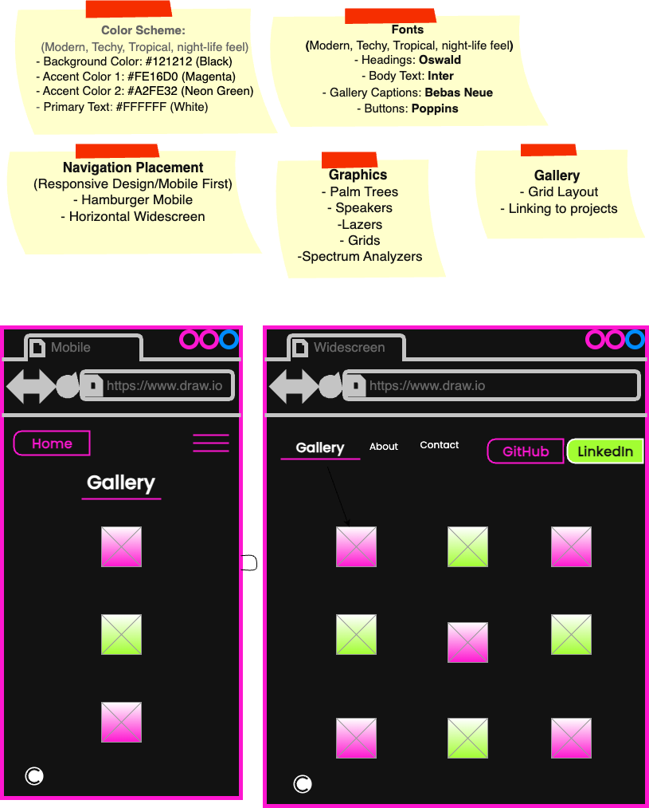
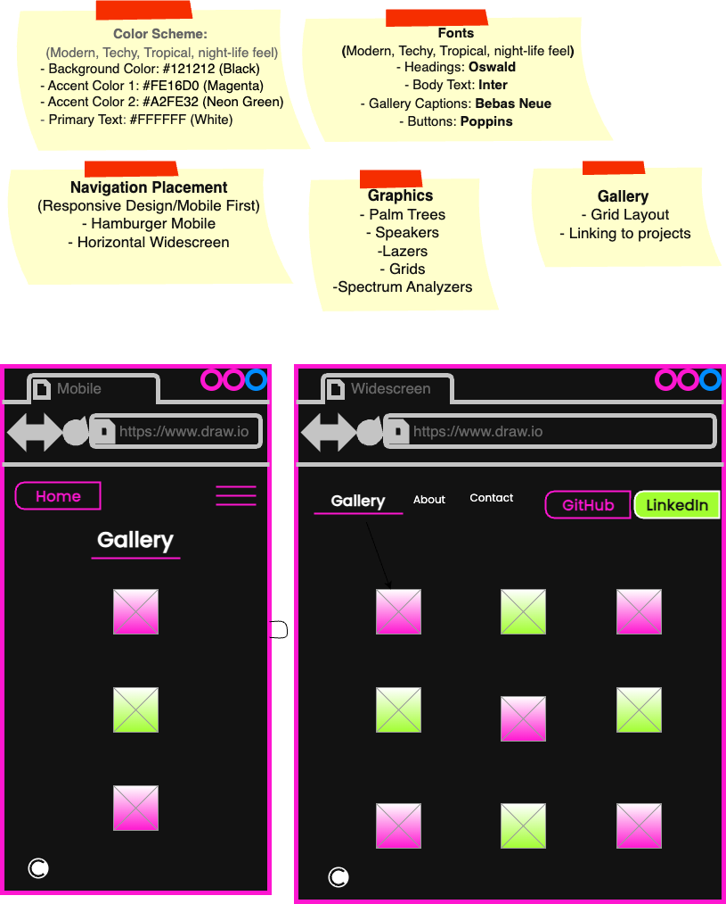

Wireframes
Look and Feel:
I wanted to go for styles that reflect my tastes in music, technology, and "tropical vibe" of where I'm from.
I wanted to go for styles that reflect my tastes in music, technology, and "tropical vibe" of where I'm from.
